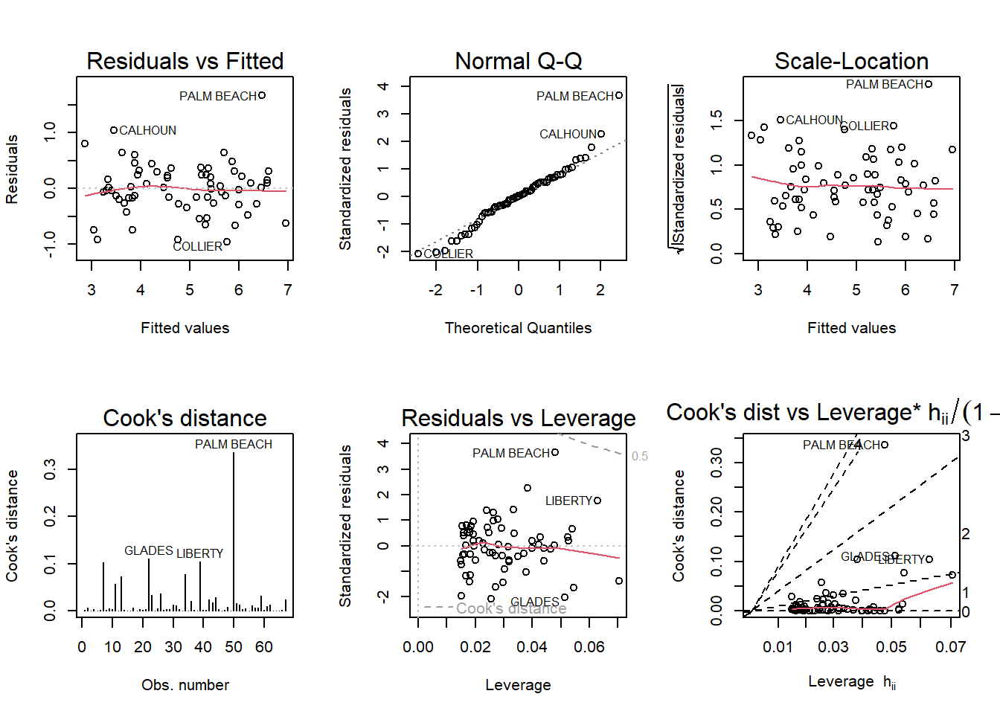

The following objects are masked from 'package:stats':
filter, lag
The following objects are masked from 'package:base':
intersect, setdiff, setequal, union
library(ggplot2)library(alr4)
Loading required package: car
Loading required package: carData
Attaching package: 'car'
The following object is masked from 'package:dplyr':
recode
Loading required package: effects
lattice theme set by effectsTheme()
See ?effectsTheme for details.
library(smss)data(house.selling.price.2)
Question 1
A. For backward elimination, which variable would be deleted first? Why?
“Beds” variable would be deleted first because it has the highest p-value of 0.487, meaning no statistical significance.
B. For forward selection, which variable would be added first? Why?
I will sstart with the value that is most significant,which is size. Size variable also has the highest correlation coefficient on the matrix.
C. Why do you think that BEDS has such a large P-value in the multiple regression model,even though it has a substantial correlation with PRICE?
I think that is because the number of beds is highly correlated with the size of the house and the number of baths in the house, representing almost the same thing.
D. Using software with these four predictors, find the model that would be selected using each criterion:
cor.matrix <-cor(house.selling.price.2)cor.matrix
P S Be Ba New
P 1.0000000 0.8988136 0.5902675 0.7136960 0.3565540
S 0.8988136 1.0000000 0.6691137 0.6624828 0.1762879
Be 0.5902675 0.6691137 1.0000000 0.3337966 0.2672091
Ba 0.7136960 0.6624828 0.3337966 1.0000000 0.1820651
New 0.3565540 0.1762879 0.2672091 0.1820651 1.0000000
colnames(house.selling.price.2)
[1] "P" "S" "Be" "Ba" "New"
model.1<-lm(P~ S +Be+Ba+New, data = house.selling.price.2)model.2<-lm(P~ S +Ba+New, data = house.selling.price.2)library(stargazer)
Please cite as:
Hlavac, Marek (2022). stargazer: Well-Formatted Regression and Summary Statistics Tables.
R package version 5.2.3. https://CRAN.R-project.org/package=stargazer
BIC is also lower in the second model, so I prefer the second.
E. Explain which model you prefer and why.
Second model has fewer variables and therefore lower AIC, BIC and adjusted R^2. All its independent variables have high significance, therefore i select the second model.
Question 2
(Data file: trees from base R) From the documentation: “This data set provides measurements of the diameter, height and volume of timber in 31 felled black cherry trees. Note that the diameter (in inches) is erroneously labeled Girth in the data. It is measured at 4 ft 6 in above the ground.” Tree volume estimation is a big deal, especially in the lumber industry. Use the trees data to build a basic model of tree volume prediction. In particular, ### A. Fit a multiple regression model with the Volume as the outcome and Girth and Height as the explanatory variables
data(trees)colnames(trees)
[1] "Girth" "Height" "Volume"
model.1<-lm(Volume~ Height + Girth + Height*Girth, data =trees)summary (model.1)
Call:
lm(formula = Volume ~ Height + Girth + Height * Girth, data = trees)
Residuals:
Min 1Q Median 3Q Max
-6.5821 -1.0673 0.3026 1.5641 4.6649
Coefficients:
Estimate Std. Error t value Pr(>|t|)
(Intercept) 69.39632 23.83575 2.911 0.00713 **
Height -1.29708 0.30984 -4.186 0.00027 ***
Girth -5.85585 1.92134 -3.048 0.00511 **
Height:Girth 0.13465 0.02438 5.524 7.48e-06 ***
---
Signif. codes: 0 '***' 0.001 '**' 0.01 '*' 0.05 '.' 0.1 ' ' 1
Residual standard error: 2.709 on 27 degrees of freedom
Multiple R-squared: 0.9756, Adjusted R-squared: 0.9728
F-statistic: 359.3 on 3 and 27 DF, p-value: < 2.2e-16
B. Run regression diagnostic plots on the model. Based on the plots, do you think any of the regression assumptions is violated?
par(mfrow =c(2,3))plot(model.1, which =1:6)
None of diagnostic plots suggest violation of regression assumptions.
Question 3
data(florida)
In the 2000 election for U.S. president, the counting of votes in Florida was controversial. In Palm Beach County in south Florida, for example, voters used a so-called butterfly ballot. Some believe that the layout of the ballot caused some voters to cast votes for Buchanan when their intended choice was Gore. The data has variables for the number of votes for each candidate—Gore, Bush, and Buchanan.
A. Run a simple linear regression model where the Buchanan vote is the outcome and the Bush vote is the explanatory variable. Produce the regression diagnostic plots. Is Palm Beach County an outlier based on the diagnostic plots? Why or why not?
Call:
lm(formula = Buchanan ~ Bush, data = florida)
Residuals:
Min 1Q Median 3Q Max
-907.50 -46.10 -29.19 12.26 2610.19
Coefficients:
Estimate Std. Error t value Pr(>|t|)
(Intercept) 4.529e+01 5.448e+01 0.831 0.409
Bush 4.917e-03 7.644e-04 6.432 1.73e-08 ***
---
Signif. codes: 0 '***' 0.001 '**' 0.01 '*' 0.05 '.' 0.1 ' ' 1
Residual standard error: 353.9 on 65 degrees of freedom
Multiple R-squared: 0.3889, Adjusted R-squared: 0.3795
F-statistic: 41.37 on 1 and 65 DF, p-value: 1.727e-08
par(mfrow =c(2,3))plot(model.1, which =1:6)
Scale-location plot
Yes, Palm Beach and Dade are clear outliers for the model, as demonstrated by cooks distance. The scale-location plot also showing upward trend meaning that the residuals are larger with larger fitted values. We can see that Palm Beach and Dade are the observations that pull the line upwards.
B. Take the log of both variables (Bush vote and Buchanan Vote) and repeat the analysis in (A.) Does your findings change?
Call:
lm(formula = log(Buchanan) ~ log(Bush), data = florida)
Residuals:
Min 1Q Median 3Q Max
-0.96075 -0.25949 0.01282 0.23826 1.66564
Coefficients:
Estimate Std. Error t value Pr(>|t|)
(Intercept) -2.57712 0.38919 -6.622 8.04e-09 ***
log(Bush) 0.75772 0.03936 19.251 < 2e-16 ***
---
Signif. codes: 0 '***' 0.001 '**' 0.01 '*' 0.05 '.' 0.1 ' ' 1
Residual standard error: 0.4673 on 65 degrees of freedom
Multiple R-squared: 0.8508, Adjusted R-squared: 0.8485
F-statistic: 370.6 on 1 and 65 DF, p-value: < 2.2e-16
par(mfrow =c(2,3))plot(model.2, which =1:6)

while Palm Beach still standing out as one of the most extreme values and can be considered an outlier, it is now within acceptable boundaries on residuals vs leverage plot. Scale-location plot looks more even as well.
The model shows that there is a connection between Bunchian and Bush, and that logarithmic transformation made the model a better fit.